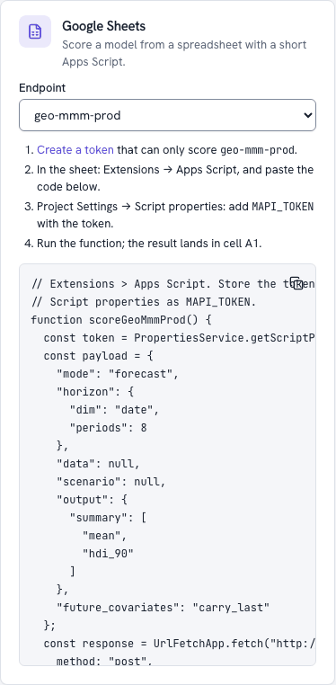

Connect Google Sheets v0.4¶
By the end of this tutorial a Google Sheet holds your model's forecast, week by week, with the actual results it was fitted on and the range the future could fall in, and refreshes itself every morning. Nobody needs to open the platform, and the sheet never holds anything but a token that can score one endpoint.
| You need | Where to get it |
|---|---|
| An endpoint serving a model that forecasts (a geo marketing mix or a weekly forecast) | The Guided Share step, or Promote a model in the Integrations hub |
| A platform the internet can reach | Apps Script runs on Google's servers, so it cannot call a stack on 127.0.0.1. Use your team's deployment |
| A Google account that may use Apps Script | Any Google Workspace or personal account |
1. Create a token that can only score this endpoint¶
In the web app, open Integrations: the Google Sheets card lists your endpoints. Pick
yours and click Create a token: the Tokens page opens prefilled for a score:<alias>
token, which can read and score that endpoint and nothing else.

Or from a terminal, with a rate limit and a monthly compute budget:
The secret is shown once. A sheet's script properties are visible to everyone who can
edit the script, which is why the token should be able to do nothing but score this
endpoint; revoke it at any time on the Tokens page (mapi tokens revoke).
2. Paste the generated script¶
In the sheet: Extensions → Apps Script. Replace the empty function with the code from
the card (it is the endpoint's Apps Script snippet, also on its Snippets tab and from
mapi endpoints snippets geo-mmm-prod -l apps_script). For an endpoint geo-mmm-prod it
looks like this:
// Extensions > Apps Script. Store the token once under Project Settings >
// Script properties as MAPI_TOKEN.
//
// Input (optional): a sheet named "Input" in long format - a header row naming the
// endpoint's dims and input variables, then one row per coordinate - replaces the
// example's inline data. The answer's summary (mean and HDI per coordinate) is written
// to a sheet named "Result".
function scoreGeoMmmProd() {
const token = PropertiesService.getScriptProperties().getProperty("MAPI_TOKEN");
const payload = {
"future_covariates": "carry_last",
"horizon": {
"dim": "time",
"periods": 8
},
"mode": "forecast",
"output": {
"kind": "expected",
"summary": [
"mean",
"hdi_90"
]
}
};
const book = SpreadsheetApp.getActiveSpreadsheet();
const input = book.getSheetByName("Input");
if (input) {
const key = payload.scenario && payload.scenario.data_vars ? "scenario" : "data";
payload[key] = mapiSheetToXr_(input.getDataRange().getValues(), payload[key]);
}
const response = UrlFetchApp.fetch("https://api.mapi.example/v1/endpoints/geo-mmm-prod/score", {
method: "post",
contentType: "application/json",
headers: {
Authorization: "Bearer " + token,
"X-Mapi-Project": "acme/growth",
Prefer: "wait=60",
},
payload: JSON.stringify(payload),
muteHttpExceptions: true,
});
if (response.getResponseCode() >= 300) {
throw new Error(response.getResponseCode() + ": " + response.getContentText());
}
const result = JSON.parse(response.getContentText());
const out = book.getSheetByName("Result") || book.insertSheet("Result");
out.clear();
if (!result.done) {
const note = "Still running (" + result.run.id + "): run the function again in a minute.";
out.getRange(1, 1).setValue(note);
return result;
}
const rows = mapiSummaryRows_(result.summary);
if (!rows.length) {
out.getRange(1, 1).setValue(result.run.state + ": no summary in the answer");
return result;
}
const width = Math.max(...rows.map((r) => r.length));
const grid = rows.map((r) => r.concat(new Array(width - r.length).fill("")));
out.getRange(1, 1, grid.length, width).setValues(grid);
return result;
}
// The summary tables one below the other: a header row ("variable", the coordinate
// columns, the statistics), one row per coordinate, a blank row between tables.
function mapiSummaryRows_(summary) {
const rows = [];
for (const table of (summary && summary.tables) || []) {
if (rows.length) rows.push([""]);
rows.push(["variable"].concat(table.columns));
for (const row of table.rows) {
rows.push([table.variable].concat(row.map((c) => (c === null ? "" : c))));
}
}
if (summary && summary.truncated) {
rows.push(["(truncated: the full result is in the run's outputs)"]);
}
return rows;
}
// A long table (a header row, then rows) as an inline dataset shaped like the example's:
// columns named like its dims hold coordinates, columns named like its variables hold
// values; empty cells become null.
function mapiSheetToXr_(values, example) {
if (!example || !example.data_vars) {
throw new Error("this endpoint's example call sends no inline data to replace");
}
const header = values[0].map(String);
const rows = values.slice(1).filter((r) => r.some((c) => c !== ""));
const column = (name) => {
const i = header.indexOf(name);
if (i < 0) throw new Error('the Input sheet needs a column named "' + name + '"');
return i;
};
const cell = (v) =>
v instanceof Date ? Utilities.formatDate(v, Session.getScriptTimeZone(), "yyyy-MM-dd") : v;
const coords = {};
const index = {};
for (const spec of Object.values(example.data_vars)) {
for (const dim of spec.dims) {
if (index[dim]) continue;
const i = column(dim);
index[dim] = new Map();
const seen = [];
for (const r of rows) {
const key = cell(r[i]);
if (!index[dim].has(key)) {
index[dim].set(key, seen.length);
seen.push(key);
}
}
coords[dim] = { dims: [dim], data: seen };
}
}
const data_vars = {};
for (const [name, spec] of Object.entries(example.data_vars)) {
const i = column(name);
const value = (r) => (r[i] === "" ? null : r[i]);
if (!spec.dims.length) {
data_vars[name] = { dims: [], data: rows.length ? value(rows[0]) : null };
continue;
}
const last = spec.dims.length - 1;
const empty = (k) => coords[spec.dims[k]].data.map(() => (k < last ? empty(k + 1) : null));
const data = empty(0);
for (const r of rows) {
const at = spec.dims.map((dim) => index[dim].get(cell(r[column(dim)])));
let node = data;
for (let k = 0; k < at.length - 1; k++) node = node[at[k]];
node[at[at.length - 1]] = value(r);
}
data_vars[name] = { dims: spec.dims, data: data };
}
return { coords: coords, data_vars: data_vars };
}
Then Project Settings → Script properties → Add script property: name MAPI_TOKEN,
value the token from step 1. Back in the editor, choose the function and press Run.
The first run asks you to authorise the script to connect to an external service and to edit
your spreadsheets.
A sheet called Result now holds the answer: the platform ran the endpoint's example call
(here an 8-week forecast) in a sandbox and returned the requested summary inline, one table
per output variable. Each table has a header row (variable, the coordinate columns such as
geo and time, then mean, hdi_90_lower and hdi_90_upper) and one row per
coordinate. The payload is the endpoint's own example, generated from its input contract, so
it is valid as it stands. If the run takes longer than the minute the script waits, Result
says Still running; run the function again to collect it.
To send your own data instead of the example's, add a sheet called Input in long format: a header row naming the endpoint's dims and input variables, then one row per coordinate. The script reads it into the call when the example sends inline data; an endpoint whose example call sends none (a plain forecast) refuses an Input sheet.
The summary is per coordinate, per market and week here. The next step writes a different table: the history the model was fitted on next to the forecast's range, summed over markets.
3. Write the forecast into a table¶
A forecast run also writes a small JSON table for Guided mode, ui/guided/forecast.json:
the history the model was fitted on, then the forecast's quantiles per period. This script
fetches it and writes it into a sheet called Forecast. Replace the code with it, and set
MAPI_URL, MAPI_PROJECT, ENDPOINT and CALL (the payload of the generated script):
// A forecast from a modeling-api endpoint, written into the sheet "Forecast": the weeks the
// model was fitted on (with your actual results), then the forecast with its likely range.
// Extensions > Apps Script: paste this file. Project Settings > Script properties: add
// MAPI_TOKEN (a token that can only score this endpoint).
const MAPI_URL = "https://api.mapi.example"; // your platform's API address
const MAPI_PROJECT = "acme/growth"; // <tenant>/<project>
const ENDPOINT = "geo-mmm-prod";
// The call: the "payload" of the hub's Apps Script snippet for your endpoint.
const CALL = {
mode: "forecast",
horizon: { dim: "time", periods: 8 },
future_covariates: "carry_last",
output: { kind: "expected", summary: ["mean", "hdi_90"] },
};
function refreshForecast() {
const token = PropertiesService.getScriptProperties().getProperty("MAPI_TOKEN");
// One score run per day: running this again the same day collects that run's result
// instead of starting another (the platform remembers an Idempotency-Key for 24 hours).
const day = Utilities.formatDate(new Date(), "UTC", "yyyy-MM-dd");
const response = UrlFetchApp.fetch(`${MAPI_URL}/v1/endpoints/${ENDPOINT}/score`, {
method: "post",
contentType: "application/json",
headers: {
Authorization: "Bearer " + token,
"X-Mapi-Project": MAPI_PROJECT,
Prefer: "wait=30",
"Idempotency-Key": `sheets-${ENDPOINT}-${day}`,
},
payload: JSON.stringify(CALL),
muteHttpExceptions: true,
});
if (response.getResponseCode() >= 300 && response.getResponseCode() !== 202) {
throw new Error(response.getResponseCode() + ": " + response.getContentText());
}
const result = JSON.parse(response.getContentText());
const sheet = forecastSheet();
if (!result.done) {
sheet.getRange("A1").setValue(`Still running (${result.run.state}): run this again in a minute.`);
return;
}
if (result.run.state !== "succeeded") {
sheet.getRange("A1").setValue(`The forecast failed: ${result.run.state}. See run ${result.run.id}.`);
return;
}
const link = result.outputs.find((o) => o.name === "ui/guided/forecast.json");
if (!link) {
sheet.getRange("A1").setValue("This endpoint's model wrote no forecast table.");
return;
}
// A short-lived signed link: fetch it now, never store it. It needs no token.
const view = JSON.parse(UrlFetchApp.fetch(link.url).getContentText());
const fan = view.fan;
const header = [fan.dim, `Actual ${view.kpi}`].concat(
fan.quantiles.map((q) => (q === 0.5 ? "Median" : `${Math.round(q * 100)}%`)),
);
const rows = fan.coords.map((coord, j) =>
[coord, cell(fan.observed && fan.observed[j])].concat(fan.values.map((row) => cell(row[j]))),
);
sheet.getRange(1, 1, 1, header.length).setValues([header]);
sheet.getRange(2, 1, rows.length, header.length).setValues(rows);
const units = view.units ? ` (${view.units})` : "";
sheet
.getRange(rows.length + 3, 1, 1, 2)
.setValues([[`Forecast from ${view.split_at}`, `${view.kind} ${view.kpi}${units}`]]);
}
// An empty cell for a missing value (no actuals after the split, no forecast before it).
function cell(value) {
return value === null || value === undefined ? "" : value;
}
function forecastSheet() {
const book = SpreadsheetApp.getActiveSpreadsheet();
const sheet = book.getSheetByName("Forecast") || book.insertSheet("Forecast");
sheet.clearContents();
return sheet;
}
Run refreshForecast. The Forecast sheet then looks like this (the numbers depend on
your model):
| time | Actual revenue | 5% | 25% | Median | 75% | 95% |
|---|---|---|---|---|---|---|
| 2026-09-27 | 101.5 | |||||
| 2026-10-04 | 98.2 | |||||
| 2026-10-11 | 104.9 | |||||
| 2026-10-18 | 88.0 | 96.3 | 101.2 | 106.4 | 114.9 | |
| 2026-10-25 | 85.1 | 94.0 | 99.8 | 105.2 | 115.3 | |
| Forecast from 2026-10-18 | expected revenue (kEUR) |
How to read it: in 90% of plausible futures the week of 18 October lands between the 5% and 95% columns; half of them land between 25% and 75%. The KPI is summed over the model's other dims (markets, stores) per posterior draw before the quantiles are taken, which is why these ranges are honest totals and not sums of per-market ranges. Chart the table with Insert → Chart (a line for the median and the actuals, an area between 5% and 95%).
What the script does, and why:
- One run per day. It sends an
Idempotency-Keymade of the endpoint and the date. The platform remembers a key for 24 hours, so running the script again the same day returns the same run instead of starting (and paying for) another one. ChangeCALLand you get a409 IDEMPOTENCY_CONFLICTuntil the next day; rename the key to start over. - Still running?
Prefer: wait=30waits up to 30 seconds. A cold start in the cloud can take longer; the sheet then says Still running, and the next run of the script collects the result. - Short-lived links. The result's links are signed URLs that expire after 15 minutes. The script fetches the table at once and never stores the link; the link needs no token.
4. Refresh it every morning¶
In the Apps Script editor: Triggers (the clock icon) → Add Trigger →
function refreshForecast, event source Time-driven, Day timer, a time of day. Each
morning the sheet is cleared and refilled with a fresh forecast from whatever version the
endpoint serves that day, so promoting a better model updates the sheet without touching it.
When something goes wrong¶
| What the sheet or the editor shows | Why | What to do |
|---|---|---|
401: … |
No token, or a revoked or expired one | Check the MAPI_TOKEN script property; create a new token |
403: … |
The token's scope is not score:<this alias> (or the project header is wrong) |
Create the token from the Sheets card, check MAPI_PROJECT |
404: … |
The endpoint was deleted or renamed | Pick the endpoint again in the Sheets card |
409: … with IDEMPOTENCY_CONFLICT |
CALL changed since the day's first run, under the same key |
Wait for tomorrow, or change the key's prefix |
422: … with MISSING_FUTURE_COVARIATE, or 409: … with HORIZON_EXCEEDS_FIT |
The call asks for something the model cannot answer: future values it does not have, or more periods than it may forecast | Copy the payload from the endpoint's snippet again; shorten the horizon |
429: … with RATE_LIMITED or QUOTA_EXCEEDED |
The token's rate limit, its budget or a project quota | Raise the limit or budget on the Tokens page, or refresh less often |
| This endpoint's model wrote no forecast table. | The call is not a forecast, or the model's outputs have no KPI to tabulate | Use a forecast call; for other outputs, read the result with the Python client |
Next¶
- Embed a chart in a doc or a dashboard next to the sheet.
- Receive webhooks to refresh the sheet as soon as a better model goes live, instead of on a timer.
- The Integrations hub for every snippet and token option.